常微分方程初&边值问题数值解 https://www.cnblogs.com/aksoam/p/18358486
https://www.cnblogs.com/aksoam/p/18360790
1. 引言 微分方程 :含有未知函数及其导数或微分的等式; 除了少数特殊类型的微分方程能用解析方法求得精确解外 , 多数情况找不到解的解析表达式
本章研究两类常微分问题: 一阶常微分方程的初值问题 ; 两阶常微分方程边值问题
\begin{cases}
\boldsymbol{y}\prime =\boldsymbol{f}(x,\boldsymbol{y})\\
\boldsymbol{y}(\boldsymbol{a})=\boldsymbol{y}_0\\
x\in [a,b],\\
\end{cases} y(x) 是定义在 [a,b] 上的 m 维函数向量; f(x,y) 是定义在 m + 1 维区域 G=\{(x,y)\mid x\in [a,b],y\in \mathbb{R} ^m\} 上的 m 维已知函数向量.
由常微分方程理论知:如果函数 f(x,y) 在区域 G 中连续 , 且关于y 满足利普希茨 (Lipschitz) 条件 , 即对所有 x\in[a,b]\text{ 及 }y\in\mathbb{R}^m, z\in\mathbb{R}^m, 总存在常数 L > 0,使得:
\|f(x,y)-f(x,z)\|\leqslant L\|y-z\|, 则方程 (9.1) 存在唯一解 , 且解连续依赖于初始条件和右端项
\begin{cases}&-y''+q(x)y=f(x),\quad x\in[a,b],\\&y(a)=\alpha, y(b)=\beta,\end{cases} 其中 q(x) 和 f(x) 在区间 [a,b] 上连续 , q(x) > 0. 这里假设上述边值问题存在唯一解 , 且解连续依赖于边界条件和右端项
无论是初值问题还是边值问题 , 其解 \boldsymbol{y}=\boldsymbol{y}(x) 都是区间 [a,b] 上关于变量 x 的函数或函数向量, \boldsymbol{y}=(y_1(x),y_2(x),\cdots,y_m(x))^T . 记 a=x_{0} 为求解区域中的一系列节点 . 数值解就是要计算精确解 \boldsymbol{y(x)} 在这些节点 x_n 处的近似值 \boldsymbol{y_n} .
为了简单起见,假设网格点为均匀网格:
h_n=x_{n+1}-x_n=h=\frac{b-a}{N} h为网格步长,本文主要介绍 m = 1 时的初值问题 , 对于边值问题和 m > 1 的情况下的初值问题将分别在最后两节作简单介绍
2.欧拉公式(欧拉折线法) 初值问题:
\boldsymbol{y}\prime =\boldsymbol{f}(x,\boldsymbol{y}) \\
\boldsymbol{y}(\boldsymbol{a})=\boldsymbol{y}_0 \\
x\in [a,b] 欧拉公式是求解初值问题 公式(1) 的一种简单而古老的数值方法 .
把方程(1) 中的导数项 \boldsymbol{y'} 用差商逼近 , 从而把一个微分方程转化成为一个代数方程 , 以便求解.
在节点 x_n 处, 公式(1)有:
y'(x_n)=f(x_n,y(x_n)). y' 有三种差商公式:前向差商, 后向差商, 中间差商.以下以前向差商为例:
y'(x_n)\approx\frac{y(x_{n+1})-y(x_n)}{x_{n+1}-x_n} 则得到离散公式:
y(x_{n+1})\approx y(x_{n})+(x_{n+1}-x_n)f(x_{n},y(x_{n})).\tag{1.1} 因为真解 y(x) 是未知的, 所以用近似解 y(x_n) 来逼近真解.只要知道初值 y(a)=y_0 , 就可以用欧拉公式来求解出 y(x_i),i=1,2,\cdots,n 的数值解.
欧拉公式的几何意义十分清楚,方程 y' = f(x,y) 满足初始条件 y(x_0 ) = y _0 的解y = y(x) 是 xOy 平面上过点 P_0 (x_0 ,\boldsymbol{y_0}) 的一条特殊积分曲线.欧拉方法就是用从 P_0 出发的折线 P_0, P_1 ···P_N 来作为积分曲线 y = y(x) 的近似解
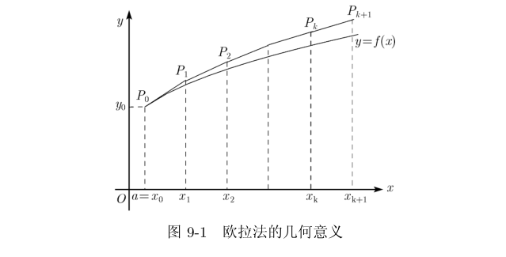 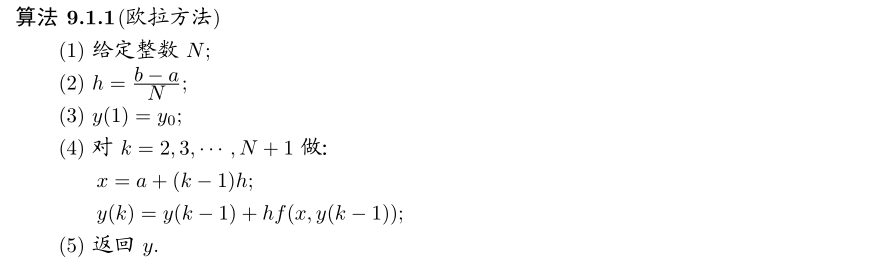 2.1 例题 精确解:y(x)=\sqrt{1+2x}
# -*- coding: utf-8 -*-
from formu_lib import *
import numpy as np
from matplotlib import pyplot as plt
def f(x,y)->float:
return y-2*x/y
y0,a,b,n=1,0,1,10
def y(x)->float:
return np.sqrt(1+2*x)
xi,yi=EulerMethod(f,y0,a,b,n)
plt.plot(xi,yi,label='Euler Method')
plt.plot(xi,[y(i) for i in xi],label='Exact Solution')
plt.legend()
plt.show()
plt.plot(xi,[abs(yi[i]-y(xi[i])) for i in range(len(yi))],label='Absolute Error')
plt.legend()
plt.show()两者相比较 , 显然欧拉方法给出的数值解误差较大 , 一般只有两位有效数字
3. 欧拉公式的改进 从另一角度来考察初值问题,(1) 式改写为:
\mathrm{d}y(x)=f(x,y(x))\mathrm{d}x (#_)
令积分区间为 [x_n,x_{n+1}] ,则有:
y(x_{n+1})=y(x_n)+\int_{x_n}^{x_{n+1}}f(x,y(x))\mathrm{d}x. 积分式如下:
\int_{x_n}^{x_{n+1}}f(x,y(x))\mathrm{d}x.\tag{3} 对于右端的积分式子,其中含有位置函数y(x),无法直接计算,可以采用数值积分的方法计算其近似值.将初值问题方程 (1) 离散化的方法称为初值问题的数值积分方法
使用不同的数值积分公式,会有不同的计算公式
若采用左矩形积分公式,则:
\int_{x_n}^{x_{n+1}}f(x,y(x))\mathrm{d}x\approx hf(x_n,y(x_n)). 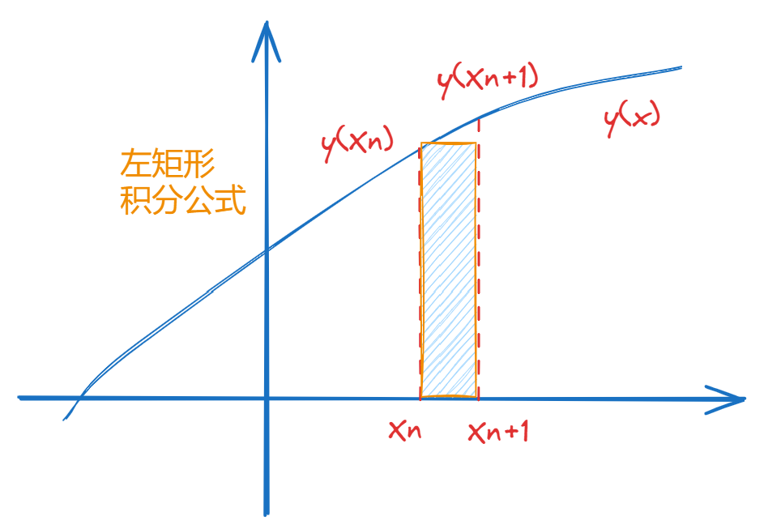 则可以得到欧拉公式 :
y(x_{n+1})\approx y(x_n)+hf(x_n, y(x_n)). 3.1 后退欧拉公式 采用右矩形积分公式,有:
\int_{x_n}^{x_{n+1}}f(x,y(x))\mathrm{d}x\approx hf(x_{n+1},y(x_{n+1})). 则可以得到后退欧拉公式 :
y_{n+1}=y_n+hf(x_{n+1},y_{n+1}). 3.2 改进欧拉方法-梯形积分 采用梯形积分公式计算公式(3),有:
\int_{x_n}^{x_{n+1}}f(x,y(x))\mathrm{d}x \approx \frac{h}{2}(f(x_n,y(x_n))+f(x_{n+1},y(x_{n+1}))) 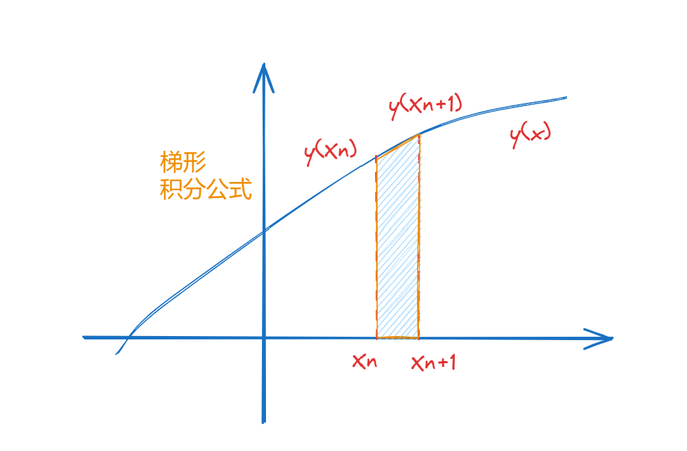 代入公式(2),则有:
y_{n+1}=y_n+\frac h2(f(x_n,y_n)+f(x_{n+1},y_{n+1})).\tag{4} 梯形求积公式比矩形求积公式的代数精度高,因此改进欧拉方法-梯形积分比公式(1.1)精度更高
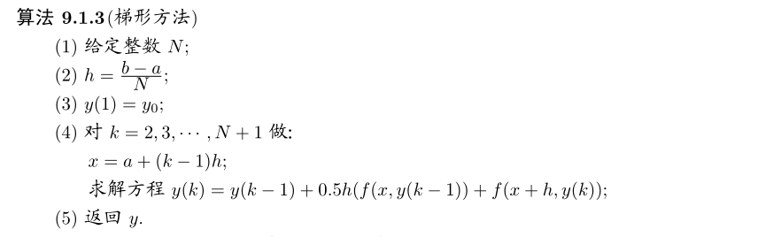 ...
# 使用梯形公式计算
def TrapeEuler(f,y0,a,b,n,tol:float=1e-10):
"""梯形欧拉公式求解常微分方程"""
h=(b-a)/n
xi=[a+i*h for i in range(n+1)]
yi=np.zeros(n+1)
yi[0]=y0
for i in range(1,n+1):
# 循环迭代
yt0=yi[i-1]
while True:
# 计算t+1的y_{n+1}近似值
yt_next=yi[i-1]+0.5*h*f(xi[i-1],yt0)+0.5*h*f(xi[i],yt0)
# 计算误差
err=abs(yt_next-yt0)
if err<tol:
yi[i]=yt_next
break
else:
yt0=yt_next
return xi,yi
...
ns=[10,50,100,200]
xi20,yi20=TrapeEuler(f,y0,a,b,ns[0])
plt.plot(xi20,yi20,label=f'Trapezoidal Euler Method-h={(b-a)/(ns[0])}',marker='*')
xi21,yi21=TrapeEuler(f,y0,a,b,ns[1])
plt.plot(xi21,yi21,label=f'Trapezoidal Euler Method-h={(b-a)/(ns[1])}',marker='*')
xi22,yi22=TrapeEuler(f,y0,a,b,ns[2])
plt.plot(xi22,yi22,label=f'Trapezoidal Euler Method-h={(b-a)/(ns[2])}',marker='*')
xi23,yi23=TrapeEuler(f,y0,a,b,ns[3])
plt.plot(xi23,yi23,label=f'Trapezoidal Euler Method-h={(b-a)/(ns[3])}',marker='*')
....
plt.plot(xi20,[abs(yi20[i]-y(xi20[i])) for i in range(len(yi20))],label=f'trapezoidal-Improve Euler Method-h={(b-a)/ns[0]}')
plt.plot(xi21,[abs(yi21[i]-y(xi21[i])) for i in range(len(yi21))],label=f'trapezoidal-Improve Euler Method-h={(b-a)/ns[1]}')
plt.plot(xi22,[abs(yi22[i]-y(xi22[i])) for i in range(len(yi22))],label=f'trapezoidal-Improve Euler Method-h={(b-a)/ns[2]}')
plt.plot(xi23,[abs(yi23[i]-y(xi23[i])) for i in range(len(yi23))],label=f'trapezoidal-Improve Euler Method-h={(b-a)/ns[3]}')
...不同的步长h对数值解的影响:
不同步长h对数值解的误差:h→0时,误差趋于0.可以发现梯形公式的误差最后趋向于改进欧拉公式的误差
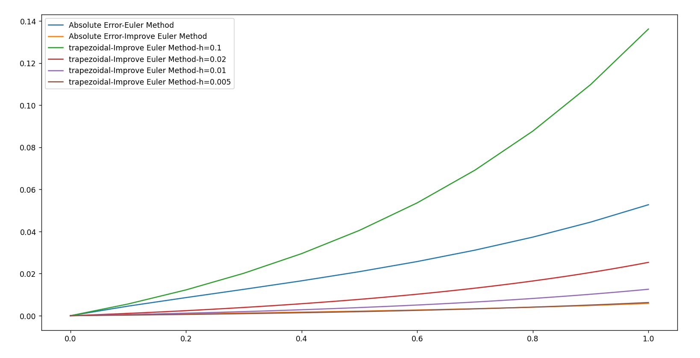 3.3 利用高阶数值积分的离散格式 亚当斯 – 巴什福思 (Adams-Bashforth) 公式 y_{n+1}=y_{n}+\frac{h}{24}(55f(x_{n},y_{n})-59f(x_{n-1},y_{n-1})+37f(x_{n-2},y_{n-2})-9f(x_{n-3},y_{n-3})). 亚当斯 – 莫尔顿 (Adams-Moulton) 公式 y_{n+1}=y_n+\frac{h}{24}(9f(x_{n+1},y_{n+1})+19f(x_n,y_n)-5f(x_{n-1},y_{n-1})+f(x_{n-2},y_{n-2})). 欧拉公式与梯形公式只需$y_n$就可以计算$y_{n+1}$,称为单步法
亚当斯 – 巴什福思公式与亚当斯 – 莫尔顿公式计算 y_{n+1} 时 , 除了要知道 y_n 外 , 还需知道 y_{n−1} , y_{n−2} 等 , 这类公式称为多步法
对于欧拉公式和亚当斯 – 巴什福思公式这类,右端不含有 y_{n+1} 的方法,称为显式格式
对于梯形公式与亚当斯 – 莫尔顿公式的右端隐含 y_n+1 ,计算 y_{n+1} 需要求解非线性方程的方法,称为隐式格式
3.4 局部截断误差 局部截断误差可用于表征求解初值问题的数值方法的计算精度.
一般地 , 常微分方程初值问题的数值解满足形如:
y_{n+1}=y_n+hg(y_{n+1},y_n,\cdots,y_{n-r}) 的等式 , 其中 y_{n},\cdots,y_{n-r}\text{ 为 }y\text{ 在 }r+1\text{ 个节点 }x_{n},\cdots,x_{n-r}\text{ 处的数值解}
数值方法的局部截断误差为:
\varepsilon_{n+1}=y(x_{n+1})-y(x_n)-hg(y(x_{n+1}),y(x_n),\cdots,y(x_{n-r})) 真解与近似解之间的差异 \varepsilon_n = y(x_n ) − y_n 称为数值方法的整体截断误差
3.5 预估校正格式(改进欧拉算法) 梯形方法公式(4)比欧拉公式(1.1)精度得到提升,但计算量大增.一种有效简化计算 的方法是:当h较小时,先使用显式格式计算合适的预估值 \bar{y_{n+1}} ,
后利用隐式格式迭代一二次计算校正值 y_{n+1} .称为预估校正方法
其中一种预估校正公式是:
\begin{cases}&\text{预估}\quad \overline{y_{n+1}}=y_n+hf(x_n,y_n),\\&\text{校正}\quad y_{n+1}=y_n+\frac{h}{2}(f(x_n,y_n)+f(x_{n+1},\overline{y_{n+1}})\end{cases}\tag{5} 通常称为改进的欧拉公式 ,另一种表示为:
y_{n+1}=y_n+\frac{h}{2}\left(f(x_n,y_n)+f(x_n+h,y_n+hf(x_n,y_n))\right) 改进欧拉方法精度高于欧拉公式,但小于梯形公式.计算量远小于梯形公式.
一般地 , 较为简单的预估校正格式都包含两个计算公式 , 一个是显式公式 , 作为预估公式 ; 另一个是隐式公式 , 作为校正公式 , 当然也可以构造包含多个计算公式的预估校正格式
构造预估校正格式时 , 应该注意阶数的匹配 , 例如在式 (5) 中 , 校正公式具有二阶精度 , 而预估公式仅具有一阶精度 . 因为提供的预估精度较差 , 且仅经一次校正 , 校正值的精度不会太高
3.5.1 python 代码实现 # -*- coding: utf-8 -*-
from formu_lib import *
import numpy as np
from matplotlib import pyplot as plt
def f(x,y)->float:
return y-2*x/y
y0,a,b,n=1,0,1,10
def y(x)->float:
return np.sqrt(1+2*x)
xi,yi=EulerMethod(f,y0,a,b,n)
plt.plot(xi,yi,label='Euler Method')
xi1,yi1=ImproveEulerMethod(f,y0,a,b,n)
plt.plot(xi1,yi1,label='improve Euler Method')
plt.plot(xi,[y(i) for i in xi],label='Exact Solution')
plt.legend()
plt.show()
plt.plot(xi,[abs(yi[i]-y(xi[i])) for i in range(len(yi))],label='Absolute Error-Euler Method')
plt.plot(xi1,[abs(yi1[i]-y(xi1[i])) for i in range(len(yi))],label='Absolute Error-Improve Euler Method')
plt.legend()
plt.show()算法误差对比
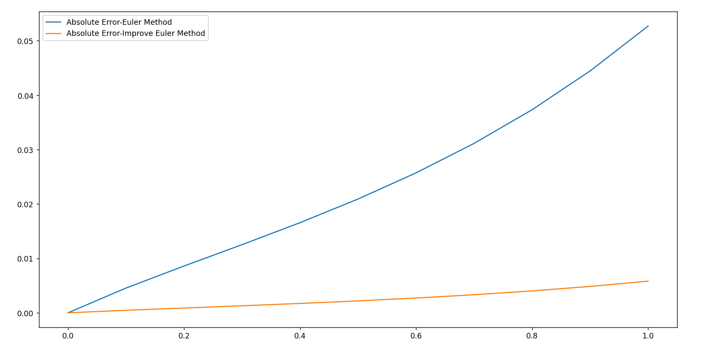 \left.\left\{\begin{array}{ll}\text{预估}&\overline{y_{n+1}}=y_{n-1}+2hf(x_n, y_n),\\\\\text{校正}&y_{n+1}=y_n+\frac{h}{2}(f(x_n,y_n)+f(x_{n+1}, \overline{y_{n+1}}))\end{array}\right.\right.\tag{6} 公式(6)的预估公式/校正公式都具有二阶精度 , 因此精度更高.
\begin{cases}\overline{y_{n+1}}=y_{n}+\frac{h}{24}(55f(x_{n},y_{n})-59f(x_{n-1},y_{n-1})+37f(x_{n-2},y_{n-2})-9f(x_{n-3},y_{n-3})),\\\\y_{n+1}=y_{n}+\frac{h}{24}(9f(x_{n+1},\overline{y_{n+1}})+19f(x_{n},y_{n})-5f(x_{n-1},y_{n-1})+f(x_{n-2},y_{n-2})).\end{cases}\tag{7} 公式(7)的预估公式/校正公式都具有四阶精度 , 因此精度更高.
4.龙格 – 库塔公式( R-K 方法) 这是一种广泛应用的高精度显式单步法.
龙格 – 库塔公式的基本思想就是设法计算 f(x,y) 在某些点上的函数值 , 然后对这些函数值作线性组合 , 构造近似计算公式 , 再把近似公式和解的泰勒展开式相比较 , 使前面的若干项吻合 , 从而获得达到一定精度的数值计算公式 .
一般的显式龙格–库塔公式的形式为:
\begin{aligned}&y_{n+1}=y_{n}+\sum_{i=1}^{r}\omega_{i}k_{i}\\&k_{1}=hf(x_{n},y_{n}),\\&k_{i}=hf\left(x_{n}+\alpha_{i}h,y_{n}+\sum_{j=1}^{i-1}\beta_{ij}k_{j}\right),\quad i=2,3,\cdots,r.\end{aligned}\tag{8} 其中 \omega_i , \alpha_i 和 \beta_{ij} 是参数,与公式(1)右端得到f(x,y)及步长h无关. 上式成为r段的龙格 – 库塔公式.特别地 , 若式 (8) 与 y(x_{n+1} ) 的泰勒展开式的前 p + 1项完全一致 , 即局部截断误差达到 O(h^{p+1} ) , 则称公式 (8) 为 p阶r段龙格–库塔公式
龙格–库塔公式是一类公式 , 每确定一组特殊的系数 , 就得到一个特殊的龙格 – 库塔公式
<<现代数值计算 第二版>>p226页给出了一个二阶二段的龙格 – 库塔公式推导过程,这里不再赘述.
4.1常用的R-K公式 4.1.1二阶二段龙格 – 库塔公式(R-K22) \begin{cases}&y_{n+1}=y_n+\frac{1}{2}k_1+\frac{1}{2}k_2,\\&k_1=hf(x_n,y_n),\\&k_2=hf(x_n+h,y_n+k_1).\end{cases}\tag{9.1} 这就是前面的预估校正公式
\begin{cases}&y_{n+1}=y_n+k_2,\\&k_1=hf(x_n,y_n),\\&k_2=hf\left(x_n+\frac{1}{2}h,y_n+\frac{1}{2}k_1\right).\end{cases}\tag{9.2} 该格式称为中点公式 .
4.1.2 三阶三段龙格 – 库塔公式(R-K33) \begin{aligned}&y_{n+1}=y_{n}+\frac{1}{6}(k_{1}+4k_{2}+k_{3}),\\&k_{1}=hf(x_{n}, y_{n}),\\&k_{2}=hf\left(x_{n}+\frac{1}{2}h,y_{n}+\frac{1}{2}k_{1}\right),\\&k_{3}=hf(x_{n}+h,y_{n}-k_{1}+2k_{2}).\end{aligned}\tag{10} 4.1.3 三阶三段 Heun 公式 \begin{aligned}&y_{n+1}=y_{n}+\frac{1}{4}(k_{1}+3k_{3}),\\&k_{1}=hf(x_{n},y_{n}),\\&k_{2}=hf\left(x_{n}+\frac{1}{3}h,y_{n}+\frac{1}{3}k_{1}\right),\\&k_{3}=hf\left(x_{n}+\frac{2}{3}h,y_{n}+\frac{2}{3}k_{2}\right).\end{aligned}\tag{11} 4.1.4 标准四阶四段龙格 – 库塔公式 \begin{aligned}
y_{n+1}=& y_{n}+\frac{1}{6}(k_{1}+2k_{2}+2k_{3}+k_{4}), \\
k_{1}=& hf(x_{n},y_{n}), \\
k_{2}=& hf\left(x_{n}+\frac{1}{2}h,y_{n}+\frac{1}{2}k_{1}\right), \\
k_{3}=& hf\left(x_{n}+\frac{1}{2}h,y_{n}+\frac{1}{2}k_{2}\right), \\
k_{4}=& hf(x_{n}+h,y_{n}+k_{3}).
\end{aligned}\tag{12} 在实际应用中 , 最常用的是标准四阶四段龙格 – 库塔公式
4.1.5 四阶四段 Gill 公式 \begin{aligned}
y_{n+1}=& y_{n}+\frac{1}{6}(k_{1}+(2-\sqrt{2})k_{2}+(2+\sqrt{2})k_{3}+k_{4}), \\
k_{1}=& hf(x_{n},y_{n}), \\
k_{2}=& hf\left(x_{n}+\frac{1}{2}h,y_{n}+\frac{1}{2}k_{1}\right), \\
k_{3}=& hf\left(x_{n}+\frac{1}{2}h,y_{n}+\frac{\sqrt{2}-1}{2}k_{1}+\frac{2-\sqrt{2}}{2}k_{2}\right), \\
k_{4}=& hf\left(x_{n}+h,y_{n}-\frac{\sqrt{2}}{2}k_{2}+\frac{2+\sqrt{2}}{2}k_{3}\right).
\end{aligned}\tag{13} RK方法的阶数与计算函数值的次数之间的关系并非等量增加的 ,事实上 , 对于大量的实际问题 , 四阶的龙格 – 库塔公式已可满足对精度的要求 :
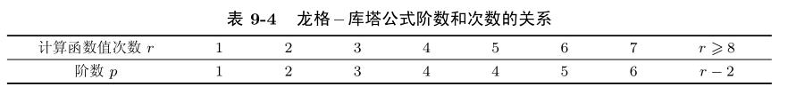 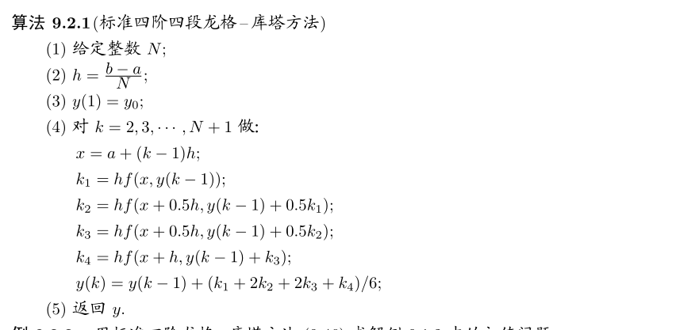 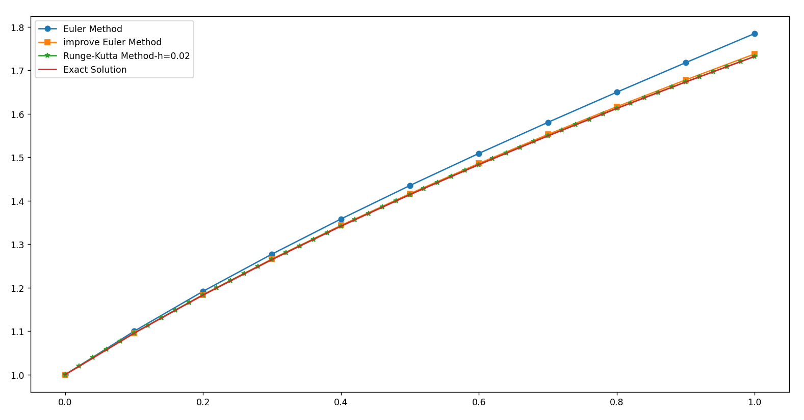 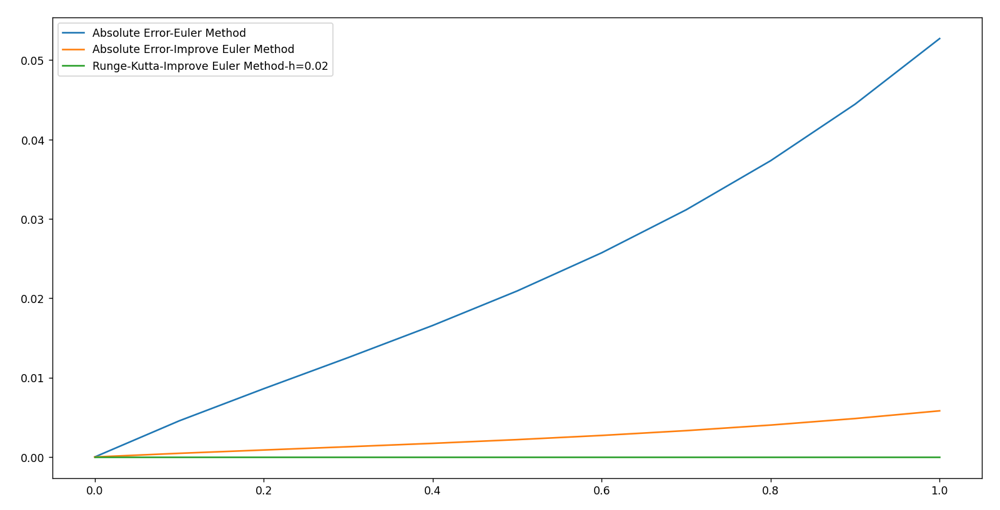 4.2龙格 – 库塔公式的优缺点 在求解范围较大而精度要求较高时是比较好的方法 显示格式且自启动. R-K公式基于泰勒展开,因此要求解函数y(x)具有较好的光滑性质 如果解y(x)光滑性差 , 那么四阶龙格 – 库塔公式求得的数值解精度可能反而不如改进的欧拉公式 5. 收敛性与稳定性 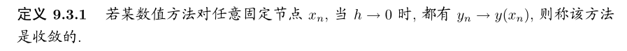 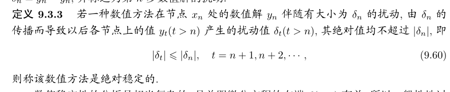 6. 微分方程组和刚性问题 本节讨论常微分方程组的数值解法
6.1 一阶常微分方程组 前面在未知函数个数 m = 1情况下得到的大部分结论都可平行地推广到 m > 1 的情况 ;前文介绍的梯形公式、预估校正格式和龙格 – 库塔公式均可应用于一阶常微分
方程组的求解 . 只是在进行理论分析时 , 需要将绝对值替换为向量范数
例如,考虑以下方程组:
\left.\left(\begin{array}{c}u'\\v'\end{array}\right.\right)=\left(\begin{array}{cc}0&1\\-x^2&-x\end{array}\right)\left(\begin{array}{c}u\\v\end{array}\right)+\left(\begin{array}{c}0\\x+1\end{array}\right),\quad x\in(0,10) \left.\left(\begin{array}{c}u(0)\\\\v(0)\end{array}\right.\right)=\left(\begin{array}{c}a\\b\end{array}\right). 将区间 [0,10] 进行 N 等分 , 记 h =10/N .将欧拉公式 (1.1) 应用于该问题 , 则有:
\left.\left(\begin{array}{c}u_{n+1}\\v_{n+1}\end{array}\right.\right)=\left(\begin{array}{c}u_{n}\\v_{n}\end{array}\right)+h\left(\left(\begin{array}{cc}0&1\\-x_{n}^{2}&-x_{n}\end{array}\right)\left(\begin{array}{c}u_{n}\\v_{n}\end{array}\right)+\left(\begin{array}{c}0\\x_{n}+1\end{array}\right)\right) \left.\left(\begin{array}{c}u_0\\v_0\end{array}\right.\right)=\left(\begin{array}{c}a\\b\end{array}\right). 判断欧拉方法求解的绝对稳定性.可知方程组扰动表达式为:
\left.\left(\begin{array}{c}\delta_u^{n+1}\\\delta_v^{n+1}\end{array}\right.\right)=\left(\begin{array}{cc}0&1\\-x^2&-x\end{array}\right)\left(\begin{array}{c}\delta_u^n\\\delta_v^n\end{array}\right), 矩阵 \left(\begin{array}{cc}0&1\\-x^2&-x\end{array}\right) 的特征值为 \lambda_{1,2}=\mathrm e^{\pm\frac{2\pi}{3}\mathrm i}x . 可以证明当 |h\lambda_i|<1(\text{或 }h<0.1) 时,有:
\left.\left\|\left(\begin{array}{c}\delta_u^{n+1}\\\delta_v^{n+1}\end{array}\right.\right)\right\|\leqslant\left\|\left(\begin{array}{c}\delta_u^n\\\delta_v^n\end{array}\right)\right\|, 即该方法是绝对稳定的
6.2 高阶常微分方程初值问题 \left\{\begin{matrix}\begin{aligned}&y^{(n)}=f(x,y(x),y'(x),\cdots,y^{(n-1)}(x)),\quad x\in[a,b],\\&y(a)=\tilde{y}_{0}, y'(a)=\tilde{y}_{0}^{\prime},\cdots, y^{(n-1)}(a)=\tilde{y}_{0}^{(n-1)},\end{aligned}\end{matrix}\right.\tag{14} 记:
\boldsymbol{u}=(y(x),y'(x),\cdots,y^{(n-1)})^\mathrm{T},\quad\boldsymbol{y_0}=(\tilde{y}_0,\tilde{y}_0',\cdots,\tilde{y}_0^{(n-1)})^\mathrm{T}, 则可将高阶微分方程化为一阶微分方程组:
\left\{\begin{matrix}\boldsymbol{u}'=f(x,\boldsymbol{u}) \\\boldsymbol{u}(0)=y_0 \end{matrix}\right. 例如,考虑初值问题:
\left.\left\{\begin{array}{ll}y''=-xy'-x^2y+x+1,\quad x\in[0,10],\\y(0)=a,\quad y'(0)=b.\end{array}\right.\right. 令 y=u,y^{\prime}=v, 该初值问题转化成一阶常微分方程组:
\begin{pmatrix}u'\\v'\\\end{pmatrix}=\begin{pmatrix}0 &1\\-x^2 &-x\\\end{pmatrix}\begin{pmatrix}u\\v\\\end{pmatrix}+\begin{pmatrix}x+1\\0\\\end{pmatrix} \begin{pmatrix}u_0\\v_0\\\end{pmatrix}=\begin{pmatrix}a\\b\\\end{pmatrix} 6.3 刚性方程组 例如 , 考虑常微分方程组
\left(\begin{array}{c}u'\\v'\end{array}\right)=\left(\begin{array}{cc}9&24\\-24&-51\end{array}\right)\left(\begin{array}{c}u\\v\end{array}\right)+\left(\begin{array}{c}5\cos x-\frac{1}{3}\sin x\\\\-9\cos x+\frac{1}{3}\sin x\end{array}\right),\quad x\in(0,1), \left.\left(\begin{array}{c}u(0)\\v(0)\end{array}\right.\right)=\left(\begin{array}{c}\frac{4}{3}\\\frac{2}{3}\end{array}\right). 这就是一个刚性方程组 , 其雅可比矩阵为 \left(\begin{array}{cc}9&24\\-24&-51\end{array}\right), 刚性比 s={\frac{|-39|}{|-3|}}=13 ,存在唯一解:
u=2\mathrm{e}^{-3x}-\mathrm{e}^{-39x}+\frac13\cos x,\quad v=-\mathrm{e}^{-3x}+2\mathrm{e}^{-39x}-\frac13\cos x. 求解刚性问题的困难之处:为保证算法的稳定性 , 必须将步长限制在较小的范围内.若需要计算到某一个较长的区间 , 则需要迭代非常多的时间步 . 这导致计算量大 , 并且由于舍入误差的累计 , 结果也很不准确
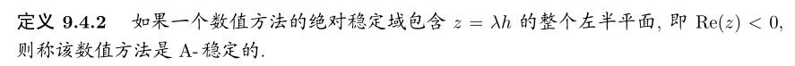 对于刚性问题 , 如果扩大数值方法的绝对稳定区域,步长的限制讲大大减少.若某数值方法是 A- 稳定的 , 则应用该方法时步长可随意选取 , 不再受稳定性限制
显式多步法和显式龙格 – 库塔法不可能是 A- 稳定的 , A- 稳定的隐式线性多步法的阶不超过 2, 而梯形公式是二阶隐式线性多步法中精度最高的一个
实际计算时 , 常采用隐式或半隐式的龙格 – 库塔公式求解刚性方程组
以下是 A- 稳定的的常用计算格式:
一段二阶隐式龙格 – 库塔方法 \begin{cases}&y_{n+1}=y_n+hk_1,\\&k_1=f\left(x_n+\frac{h}{2},y_n+\frac{h}{2}k_1\right).\end{cases} 二段二阶隐式龙格 – 库塔方法 \begin{cases}&y_{n+1}=y_{n}+\frac{h}{2}(k_{1}+k_{2}),\\&k_{1}=f(x_{n},y_{n}),\\&k_{2}=f\left(x_{n}+h,y_{n}+\frac{h}{2}(k_{1}+k_{2})\right).\end{cases} 二段四阶隐式龙格 – 库塔方法 \begin{aligned}&y_{n+1}=y_{n}+\frac{h}{2}(k_{1}+k_{2}),\\&k_{1}=f \left(x_{n} + \left(\frac{1}{2} + \frac{\sqrt{3}}{6}\right) h,y_{n} + \frac{h}{4} \left(k_{1} + \left(1 + \frac{2\sqrt{3}}{3}k_{2}\right)\right),\\_{2}=f \left(x_{n} + \left(\frac{1}{2} - \frac{\sqrt{3}}{6}\right)h,y_{n} + \frac{h}{4} \left(\left(1-\frac{2\sqrt{3}}{3}\right)k_{1} + k_{2}\right)\right) .\right.\end{aligned} 半隐式龙格 – 库塔方法 y_{n+1}=y_n+k_2, k_1=f(x_n,y_n)+\left(1-\frac{\sqrt{2}}{2}\right)h^2\frac{\partial f}{\partial x}(x_n,y_n)+\left(1-\frac{\sqrt{2}}{2}\right)h\frac{\partial f}{\partial y}(x_n,y_n)k_1, \begin{aligned}k_{2}&=hf\left(x_{n}+\frac{\sqrt{2}-1}{2}h,y_{n}+\frac{\sqrt{2}-1}{2}k_{1}\right)+\left(1-\frac{\sqrt{2}}{2}\right)h^{2}\frac{\partial f}{\partial x}(x_{n},y_{n})\\&+\left(1-\frac{\sqrt{2}}{2}\right)h\frac{\partial f}{\partial y}(x_{n},y_{n})k_{2}.\end{aligned} 7. 有限差分法 简单介绍该方法的基本思想
有限差分法离散微分方程包含两步:
第一步是将求解区域进行网格剖分 ; 第二步是将微分方程在节点处进行离散化 . 建立差分格式的离散化方法有多种 , 这里仅介绍以差商代替微商的方法
以第二类常微分问题(两阶常微分方程边值问题为例子):
\left.\left\{\begin{array}{c}-y''+q(x)y=f(x),\quad x\in[a,b],\\y(a)=\alpha, y(b)=\beta,\end{array}\right.\right.\tag{16} 对于内部节点 x_n (n = 1,2,··· ,N − 1) , 由泰勒展开公式得
\frac{y(x_{n+1})-2y(x_n)+y(x_{n-1})}{h^2}=\left[\frac{\mathrm{d}^2y}{\mathrm{d}x^2}\right]_n+\frac{h^2}{12}\left[\frac{\mathrm{d}^4y}{\mathrm{d}x^4}\right]_n+O(h^3). [ ]_n 表示方括号内的函数在点 x_n 取值,所以方程(16)在 x_n 写成:
-\frac{y(x_{n+1})-2y(x_{n})+y(x_{n-1})}{h^{2}}+q(x_{n})y(x_{n})=f(x_{n})+R_{n}(y),\\R_{n}(y)=-\frac{h^{2}}{12}\left[\frac{\mathrm{d}^{4}y}{\mathrm{d}x^{4}}\right]_{n}+O(h^{3}). h 充分小时 , R_n (y) 是的二阶无穷小量,因此差分方程为, R_n (y) 为截断误差:
\left\{\begin{matrix} -\frac{y_{n+1}-2y_n+y_{n-1}}{h^2}+q_ny_n=f_n,\\q_n=q(x_n), f_n=f(x_n).\\\end{matrix}\right. 对于边界节点 , 由边界条件知 y_{0}=\alpha, y_{N}=\beta
可得到关于 y_n 的线性代数方程组:
\left\{\begin{array}{ll}-\frac{y_{n+1}-2y_n+y_{n-1}}{h^2}+q_ny_n=f_n,\quad n=1,\cdots,N-1\\\\y_0=\alpha,\quad y_N=\beta.\end{array}\right. 记方程组的未知向量 y_h = (y_1,y_2,\cdots,y_{N-1})^\mathrm{T}, 右端向量为 g = \left(f_{1} + \frac{\alpha}{h^{2}},f_{2},\cdots,f_{N-1} +\frac{\beta}{h^2}\right) ,系数矩阵为:
\left.\boldsymbol{H}=\left(\begin{array}{ccccc}\frac{2}{h^{2}}+q_{1}&-\frac{1}{h^{2}}&0&\cdots&0\\\\-\frac{1}{h^{2}}&\frac{2}{h^{2}}+q_{2}&-\frac{1}{h^{2}}&\cdots&0\\\\0&-\frac{1}{h^{2}}&\frac{2}{h^{2}}+q_{3}&\cdots&0\\\vdots&\vdots&\vdots&\ddots&\vdots\\0&0&0&\cdots&\frac{2}{h^{2}}+q_{N-1}\end{array}\right.\right), 则有:
Hy_{h}=g. 易知 , H 为对称正定矩阵 , 故该方程组有唯一解 . 此外 , 由于矩阵 H 为三对角阵
数值实验 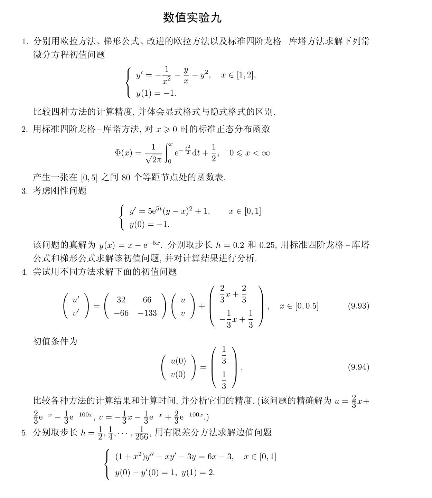 第一题 y=y(x)的数值解
第二题 x-\varPhi(x) 的数值解
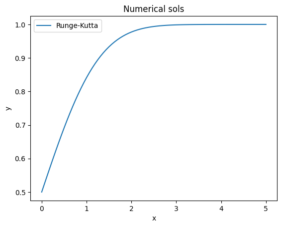 第三题 在梯形公式中当采用简单迭代格式求解 y_{n+1} 时, h=0.2,0.25 步长过大.
题中t为x,数值解为:
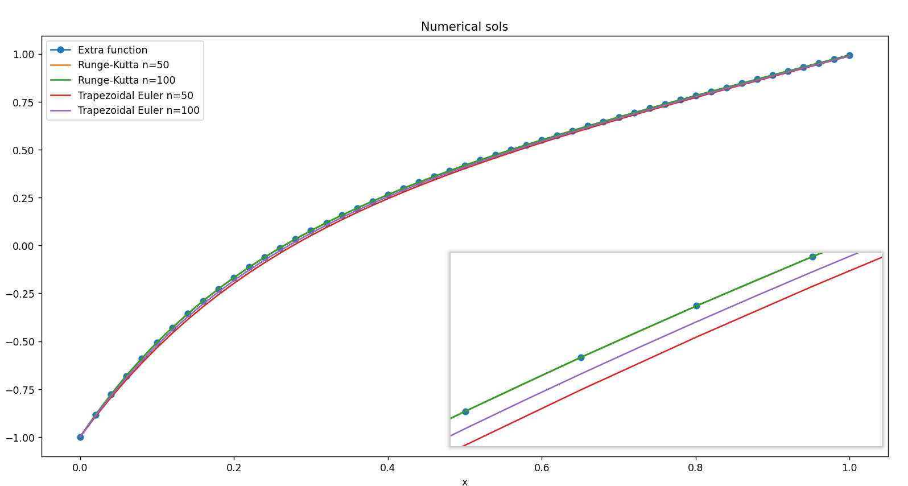 第四题 采用欧拉公式,改进欧拉公式,4阶龙格库塔公式,梯形公式求解y(x)的数值解,对比精度.
n=5:
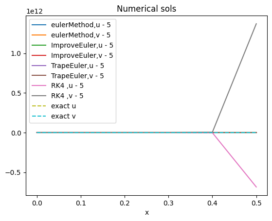 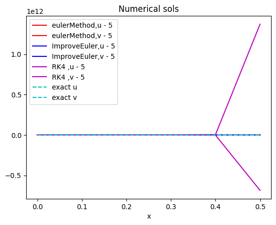 n=50:
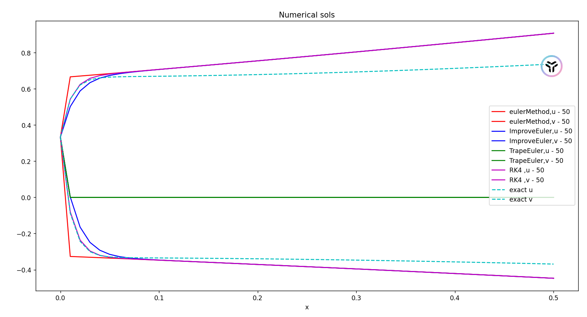 n=500:
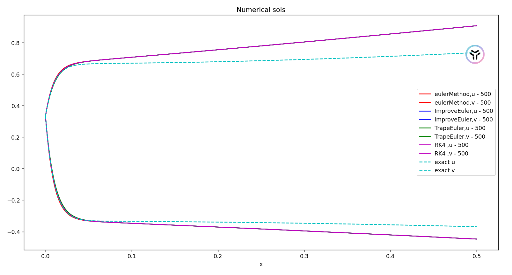 n=5000:
code from formu_lib import *
import numpy as np
import matplotlib.pyplot as plt
def f(x:float,y:float)->float:
return -1/(x*x)-y/x-y**2
y0,a,b,n=-1,1,2,50
x1,y1=EulerMethod(f,y0,a,b,n)
x2,y2=TrapeEuler(f,y0,a,b,n)
x3,y3=ImproveEulerMethod(f,y0,a,b,n)
x4,y4=RungeKuttaMethods(f,y0,a,b,n)
plt.plot(x1,y1,label='Euler')
plt.plot(x2,y2,label='Trapezoidal Euler')
plt.plot(x3,y3,label='Improved Euler')
plt.plot(x4,y4,label='Runge-Kutta')
plt.xlabel('x')
plt.ylabel('y')
plt.title('Numerical sols')
plt.legend()
plt.show()
# %%
from formu_lib import *
import numpy as np
import matplotlib.pyplot as plt
def f2(x:float,y:float)->float:
def phi(t:float)->float:
return np.exp(-t*t/2.0)
return (1/np.sqrt(2*np.pi))*Integ1dGuassLegendre(phi,0,x)+0.5
y0,a,b,n=0.5,0,5,80
h=(b-a)/n
x21=[a+i*h for i in range(n+1)]
y21=[]
for x in x21:
y21.append(f2(x,y0))
plt.plot(x21,y21,label='Runge-Kutta')
plt.xlabel('x')
plt.ylabel('y')
plt.title('Numerical sols')
plt.legend()
plt.show()
# %%
from formu_lib import *
import numpy as np
import matplotlib.pyplot as plt
def f3(x:float,y:float)->float:
return (5.0*np.exp(5*x))*(y-x)*(y-x)+1.0
def extra_f3(x:float)->float:
return x-np.exp(-5*x)
y0,a,b=-1,0,1.0
n1,n2=50,100
h=(b-a)/n1
x=[a+i*h for i in range(n1+1)]
y=[extra_f3(x[i]) for i in range(n1+1)]
plt.plot(x,y,label='Extra function',marker='o')
x31,y31=RungeKuttaMethods(f3,y0,a,b,n1)
x32,y32=RungeKuttaMethods(f3,y0,a,b,n2)
x33,y33=TrapeEuler(f3,y0,a,b,n1)
x34,y34=TrapeEuler(f3,y0,a,b,n2)
plt.plot(x31,y31,label=f'Runge-Kutta n={n1}')
plt.plot(x32,y32,label=f'Runge-Kutta n={n2}')
plt.plot(x33,y33,label=f'Trapezoidal Euler n={n1}')
plt.plot(x34,y34,label=f'Trapezoidal Euler n={n2}')
plt.xlabel('x')
plt.ylabel('y')
plt.title('Numerical sols')
plt.legend()
plt.show()